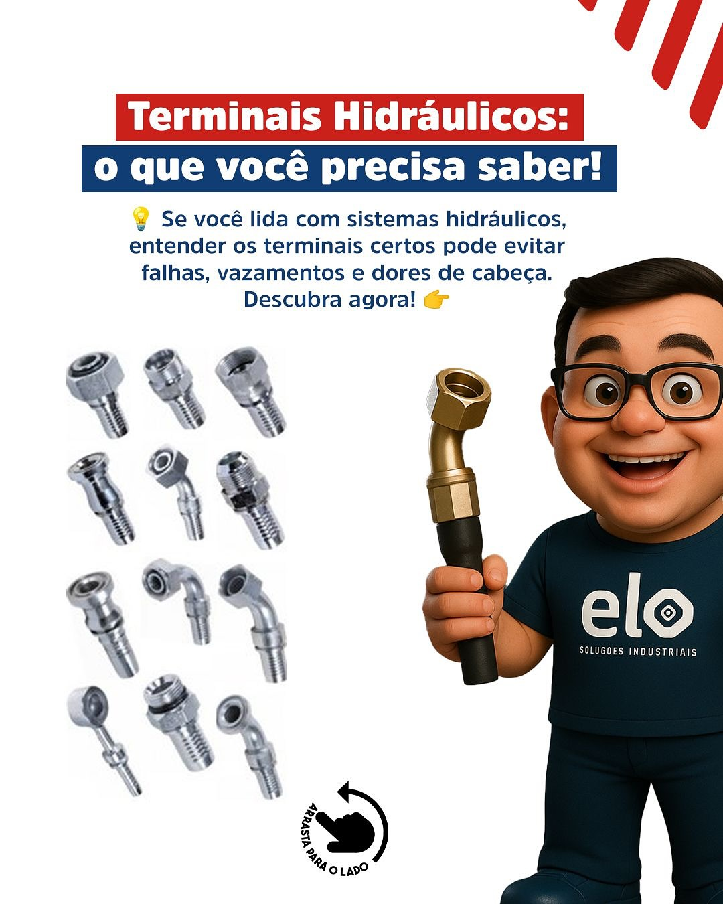

Manutenção industrial
Reposição e montagem para reduzir paradas em equipamentos e linhas de apoio.
Montagem e fabricação própria de mangueiras hidráulicas, conexões e apoio para manutenção de máquinas, veículos, oficinas e indústria.

A linha de mangueiras hidráulicas é uma das frentes mais importantes da ELO Soluções Industriais. A empresa divulga fabricação e montagem própria, com atendimento sob demanda para manutenção, máquinas, veículos e sistemas industriais.
O cliente pode enviar pelo WhatsApp informações como aplicação, medida, conexão, pressão de trabalho e urgência. A equipe retorna com orientação comercial e disponibilidade.
Reposição e montagem para reduzir paradas em equipamentos e linhas de apoio.
Atendimento para sistemas hidráulicos em equipamentos móveis e estacionários.
Soluções para oficinas, frotas, transportadoras e manutenção automotiva técnica.
Conexões, tubos hidráulicos e itens complementares conforme a necessidade da aplicação.